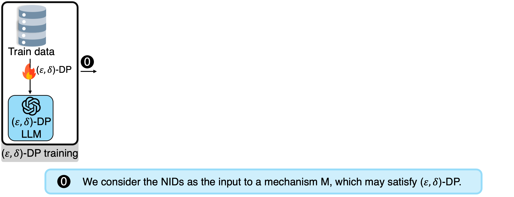
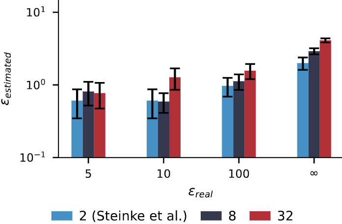
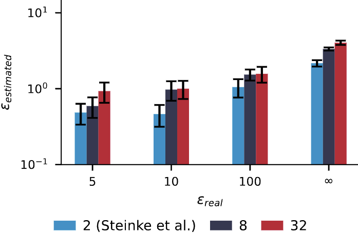

Assessing the privacy of large language models (LLMs) presents significant challenges. In particular, most existing methods for auditing differential privacy require the insertion of specially crafted canary data during training, making them impractical for auditing already-trained models without costly retraining. Additionally, dataset inference, which audits whether a suspect dataset was used to train a model, is infeasible without access to a private non-member held-out dataset. Yet, such held-out datasets are often unavailable or difficult to construct for real-world cases since they have to be from the same distribution (IID) as the suspect data. These limitations severely hinder the ability to conduct scalable, post-hoc audits. To enable such audits, this work introduces natural identifiers (NIDs) as a novel solution to the above-mentioned challenges. NIDs are structured random strings, such as cryptographic hashes and shortened URLs, naturally occurring in common LLM training datasets. Their format enables the generation of unlimited additional random strings from the same distribution, which can act as alternative canaries for audits and as same-distribution held-out data for dataset inference. Our evaluation highlights that indeed, using NIDs, we can facilitate post-hoc differential privacy auditing without any retraining and enable dataset inference for any suspect dataset containing NIDs without the need for a private non-member held-out dataset.
Poster Location
East Exhibit Hall
We show that post-hoc auditing of already-trained LLMs is feasible with Natural Identifiers (NIDs). The same NID-based framework supports both differential privacy auditing and dataset inference.
Motivation: For post-hoc auditing, we need strings that are already in the same distribution as training data, and we need many matched non-members without retraining the model.
A Natural Identifier (NID) is a structured high-entropy string that naturally appears in data, such as an MD5/SHA hash, an Ethereum address, or a Java serialization identifier. A Generated Identifier (GID) is a fresh string sampled from the same format. Because these spaces are huge, GIDs are overwhelmingly likely to be non-members while still matching the exact format.
In our experiments, we focus on three canary families: hash canaries (MD5, SHA-1, SHA-256, SHA-512), blockchain canaries (Ethereum addresses), and serialization canaries (Java serialization identifiers). For each family, we generate matching GIDs with the same format constraints.
NIDs are pervasive in real pretraining corpora: our paper reports 30,637 different NID types in Pile and 23,571 in Dolma (Table 6). Even filtered or smaller slices still contain many NIDs, e.g., 16,989 NIDs in RefinedWeb and 293 NIDs in Pile validation+test (about 0.2% of the full Pile dataset).
For each found NID $\hat{v}_i$, we create a candidate set with one NID and $c-1$ matched GIDs:
$$V_i = \{\hat{v}_i\} \cup \{c - 1 \text{ GIDs}\}$$Here, $|V_i| = c$. In DP auditing, larger $c$ makes random guessing harder and improves statistical power. In dataset inference, NID-vs-GID comparisons keep format/distribution fixed so the key difference is membership.
For a future birthday party – fairy party favors. But I want to figure out a different fairy, not Disney...34d42a69a258fa51222a2e94b4563007.jpg 300×300 pixels A quick, easy project for the kids: playful, pom-pom covered trees. Carrot and Apple Cinnamon Streusel Muffins | a cup of mascarpone Strawberry Banana Muffins recipe PaperVine: Got Kids? Make your own Dinosaur Fossils! Use modeling clay and some plastic dinosaurs to create dinosaur fossils. Made this last night to test it out. Turned out pretty cool. Trying to see if this would work for a kids event at work. I think it will! You only need 1 oz. of modeling clay per fossil.
For a future birthday party – fairy party favors. But I want to figure out a different fairy, not Disney...9659875b92ba8fa639ba476aedbb73b9.jpg 300×300 pixels A quick, easy project for the kids: playful, pom-pom covered trees. Carrot and Apple Cinnamon Streusel Muffins | a cup of mascarpone Strawberry Banana Muffins recipe PaperVine: Got Kids? Make your own Dinosaur Fossils! Use modeling clay and some plastic dinosaurs to create dinosaur fossils. Made this last night to test it out. Turned out pretty cool. Trying to see if this would work for a kids event at work. I think it will! You only need 1 oz. of modeling clay per fossil.

DP auditing aims to empirically estimate the privacy budget ($\varepsilon$) of a model. Traditional DP auditing requires training at least one additional model. This is prohibitively expensive for LLMs. In contrast, we treat the NIDs present in the training data as natural canaries, making this effectively a zero-run DP auditing workflow for the auditor.


Our approach fundamentally improves upon the standard DP auditing framework. Firstly, with our framework, we can perform DP auditing post-hoc, without the necessity of retraining the model.
Secondly, with our framework, we can leverage NIDs to increase the cardinality of the canary set, making the task of guessing the correct canary much harder.
Particularly, the standard binary formulation relies on an "in or out" canary game, effectively a cardinality of $c=2$. Because guessing the correct canary out of two has a 50% random probability, an auditor needs thousands of samples to confidently establish a tight lower bound for the privacy parameter $\varepsilon$.
By leveraging NIDs, we can expand to a higher cardinality, e.g., $c=32$ (one NID and 31 GIDs). Guessing the correct identifier among 32 choices is much harder and, as shown in Figure 2, yields tighter estimates with fewer canaries.
Dataset Inference (DI) aims to determine whether a specific dataset was utilized during pretraining. Our framework solves the major bottleneck of DI: the lack of an IID held-out set that follows exactly the same distribution as the training set. By using NIDs from the suspect dataset and generating corresponding GIDs, we can post-hoc construct both the suspect set and the held-out set with the same distribution.
To show the effectiveness of our framework, we conduct a thorough audit on the open-source OLMo and Pythia models.
We successfully demonstrate that our framework can conduct DI with perfect IID held-out sets, making dataset inference scalable and practical for existing Foundation Models.
As shown in the Table 1, our framework can successfully detect the dataset membership for all the models and datasets.
A natural question concerns the behavior of our approach on smaller, task-specific datasets.
We addressed this by successfully performing task-specific DI on the GSM8K dataset by perturbing names and numerical values while maintaining syntactic structure.
This means that our framework is not only applicable to large, general datasets, but also to much smaller, specific datasets.
Therefore, we can use our method to statistically prove dataset contamination.
Table 1: P-values for DI on the Pile Dataset with 100 suspect samples. We use a 0.01 p-value threshold. We reject the null for all training subsets (p ≤ 0.01) and do not reject it for the test set (p > 0.01). All outcomes are correct (✓).
| Model | GH | SE | HN | CC | AX | PM | IRC | Full | GH (Test) | Full (Test) |
|---|---|---|---|---|---|---|---|---|---|---|
| Pythia 12B | 0.0031 ✓ | 0.0001 ✓ | 0.0001 ✓ | 0.0001 ✓ | 0.0001 ✓ | 0.0001 ✓ | 0.0001 ✓ | 0.0001 ✓ | 0.8182 ✓ | 0.2847 ✓ |
| Pythia 6.9B | 0.0001 ✓ | 0.0001 ✓ | 0.0001 ✓ | 0.0002 ✓ | 0.0001 ✓ | 0.0001 ✓ | 0.0001 ✓ | 0.0001 ✓ | 0.6139 ✓ | 0.0811 ✓ |
| Pythia 2.8B | 0.0001 ✓ | 0.0001 ✓ | 0.0001 ✓ | 0.0001 ✓ | 0.0001 ✓ | 0.0001 ✓ | 0.0001 ✓ | 0.0001 ✓ | 0.9632 ✓ | 0.0660 ✓ |
| Notation: GH = GitHub, SE = StackExchange, HN = HackerNews, CC = Pile-CC, AX = ArXiv, PM = PubMedCentral, IRC = UbuntuIRC | ||||||||||
Natural Identifiers make post-hoc auditing of pretrained LLMs practical. The same NID/GID framework supports both privacy and data provenance checks on already-trained models.
Because NIDs are widespread across real corpora, this approach is broadly applicable in practice. In short, NIDs and matched GIDs provide an efficient, scalable, and statistically grounded path to audit existing models.
@inproceedings{rossi2026natural,
title={Natural Identifiers for Privacy and Data Audits in Large Language Models},
author={Lorenzo Rossi and Bart{\l}omiej Marek and Franziska Boenisch and Adam Dziedzic},
booktitle={The Fourteenth International Conference on Learning Representations},
year={2026},
url={https://openreview.net/forum?id=doaAUf9Pi7}
}